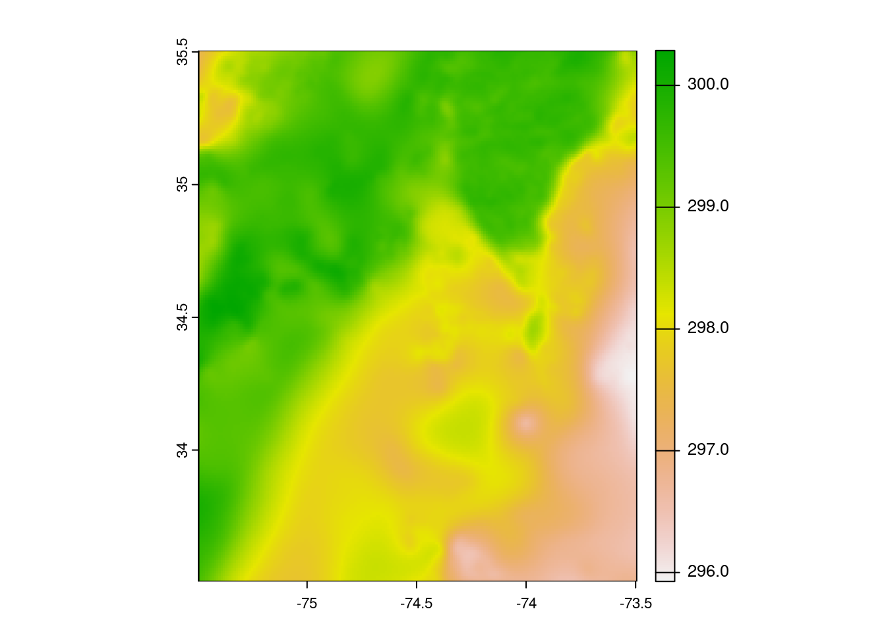
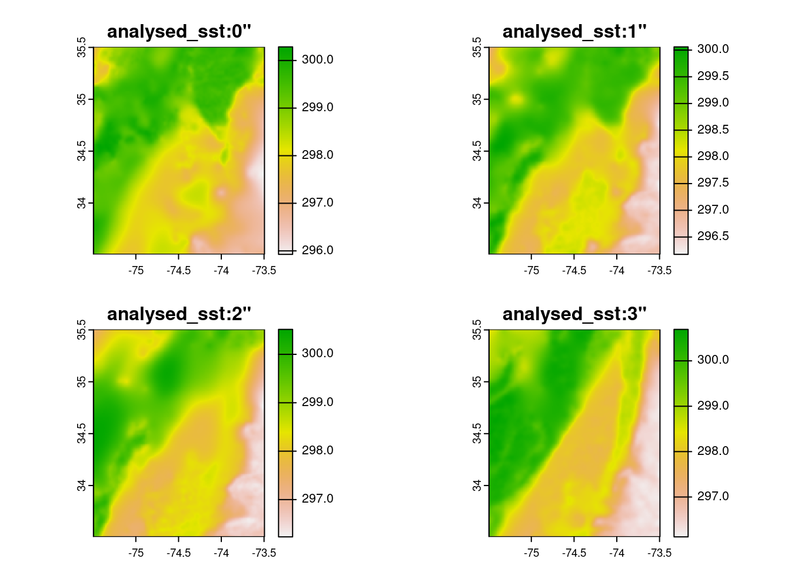

library(earthdatalogin)
library(lubridate)
library(terra)Subset and Plot
Learning Objectives
- How to crop a single data file
- How to create a data cube with
terra - How to crop a data cube to a box
Summary
In this example, we will utilize the earthdatalogin R package to retrieve, subset, and crop sea surface temperature data as a file and as a datacube from NASA Earthdata search. The earthdatalogin R package simplifies the process of discovering and accessing NASA Earth science data.
For more on earthdatalogin visit the earthdatalogin GitHub page and/or the earthdatalogin documentation site. Be aware that earthdatalogin is under active development and that we are using the development version on GitHub.
Terminology
Zarrfiles: is a community project to develop specifications and software for storage of large N-dimensional typed arrays, also commonly known as tensors. A particular focus of Zarr is to provide support for storage using distributed systems like cloud object stores, and to enable efficient I/O for parallel computing applications. Learn more here.- Open Data Cube (ODC): is an Open Source Geospatial Data Management and Analysis Software project that helps you harness the power of Satellite data. At its core, the ODC is a set of Python libraries and PostgreSQL database that helps you work with geospatial raster data. The ODC seeks to increase the value and impact of global Earth observation satellite data by providing an open and freely accessible exploitation architecture. Learn more here.
Prerequisites
The tutorials today can be run with the guest Earthdata Login that is in earthdatalogin. However, if you will be using the NASA Earthdata portal more regularly, please register for an Earthdata Login account. Please https://urs.earthdata.nasa.gov to register and manage your Earthdata Login account. This account is free to create and only takes a moment to set up.
Load Required Packages
We are using the JupyterHub and all necessary packages are already installed for you.
Note: See the set-up tab (in left nav bar) for instructions on getting set up on your own computer, but be aware that it is common to run into trouble getting GDAL set up properly to handle netCDF files. Using a Docker image (and Python) is often less aggravating.
Get a vector of urls to our nc files
Authenticate.
earthdatalogin::edl_netrc() Get the urls. The results object is a vector of urls pointing to our netCDF files in the cloud. Each netCDF file is circa 670Mb.
short_name <- 'MUR-JPL-L4-GLOB-v4.1'
bbox <- c(xmin=-75.5, ymin=33.5, xmax=-73.5, ymax=35.5)
tbox <- c("2020-01-16", "2020-12-16")
results <- earthdatalogin::edl_search(
short_name = short_name,
version = "4.1",
temporal = tbox,
bounding_box = paste(bbox,collapse=",")
)
length(results)[1] 336results[1:3][1] "https://archive.podaac.earthdata.nasa.gov/podaac-ops-cumulus-protected/MUR-JPL-L4-GLOB-v4.1/20200116090000-JPL-L4_GHRSST-SSTfnd-MUR-GLOB-v02.0-fv04.1.nc"
[2] "https://archive.podaac.earthdata.nasa.gov/podaac-ops-cumulus-protected/MUR-JPL-L4-GLOB-v4.1/20200117090000-JPL-L4_GHRSST-SSTfnd-MUR-GLOB-v02.0-fv04.1.nc"
[3] "https://archive.podaac.earthdata.nasa.gov/podaac-ops-cumulus-protected/MUR-JPL-L4-GLOB-v4.1/20200118090000-JPL-L4_GHRSST-SSTfnd-MUR-GLOB-v02.0-fv04.1.nc"Crop and plot one netCDF file
Each MUR SST netCDF file is large so I do not want to download. Instead I will use terra::rast() to do subset the data on the server side. vsi = TRUE is letting function know that these are files in the cloud and to use GDAL functionality for that type of resource.
ras <- terra::rast(results[1], vsi=TRUE)Getting errors? Scroll below to the troubleshooting section.
Crop to a very small region.
# note order of terms is different than in bbox!!
e <- terra::ext(c(xmin=-75.5, xmax=-73.5, ymin=33.5, ymax=35.5 ))
rc <- terra::crop(ras, e)
rcclass : SpatRaster
dimensions : 200, 200, 6 (nrow, ncol, nlyr)
resolution : 0.01, 0.01 (x, y)
extent : -75.495, -73.495, 33.505, 35.505 (xmin, xmax, ymin, ymax)
coord. ref. : lon/lat WGS 84
source(s) : memory
names : analysed_sst, analy~error, mask, sea_i~ction, dt_1km_data, sst_anomaly
min values : 290.656, 0.37, 1, 1.28, 128, 0.410
max values : 298.954, 0.40, 2, 1.28, 128, 3.585
time : 2020-01-16 09:00:00 UTC Plot:
plot(rc[[c(1, 2)]])
Crop and plot multiple netCDF files
We can send multiple urls to terra.
ras_all <- terra::rast(results[c(1:4)], vsi = TRUE)
ras_allclass : SpatRaster
dimensions : 17999, 36000, 24 (nrow, ncol, nlyr)
resolution : 0.01, 0.01 (x, y)
extent : -179.995, 180.005, -89.995, 89.995 (xmin, xmax, ymin, ymax)
coord. ref. : lon/lat WGS 84
sources : 20200116090000-JPL-L4_GHRSST-SSTfnd-MUR-GLOB-v02.0-fv04.1.nc:analysed_sst
20200116090000-JPL-L4_GHRSST-SSTfnd-MUR-GLOB-v02.0-fv04.1.nc:analysis_error
20200116090000-JPL-L4_GHRSST-SSTfnd-MUR-GLOB-v02.0-fv04.1.nc:mask
... and 21 more source(s)
varnames : analysed_sst (analysed sea surface temperature)
analysis_error (estimated error standard deviation of analysed_sst)
mask (sea/land field composite mask)
...
names : analysed_sst, analy~error, mask, sea_i~ction, dt_1km_data, sst_anomaly, ...
unit : kelvin, kelvin, , , hours, kelvin, ...
time : 2020-01-16 09:00:00 to 2020-01-19 09:00:00 UTC Crop to a small extent. Note order of terms is different than in bbox! Since we will only plot sst for this example, it is faster to first select our variable of interest.
e <- terra::ext(c(xmin=-75.5, xmax=-73.5, ymin=33.5, ymax=35.5 ))
ras_sst <- ras_all["analysed_sst",]
rc_sst <- terra::crop(ras_sst, e)
rc_sstclass : SpatRaster
dimensions : 200, 200, 4 (nrow, ncol, nlyr)
resolution : 0.01, 0.01 (x, y)
extent : -75.495, -73.495, 33.505, 35.505 (xmin, xmax, ymin, ymax)
coord. ref. : lon/lat WGS 84
source(s) : memory
varname : analysed_sst (analysed sea surface temperature)
names : analysed_sst, analysed_sst, analysed_sst, analysed_sst
min values : 290.656, 290.316, 289.456, 289.216
max values : 298.954, 298.869, 298.662, 298.119
unit : kelvin, kelvin, kelvin, kelvin
time : 2020-01-16 09:00:00 to 2020-01-19 09:00:00 UTC Convert Kelvin to Celsius.
rc_sst <- rc_sst - 273.15Now plot. We will set the range so it is the same across plots and clean up the titles to be just day without time.
titles <- terra::time(x = rc_sst) |> lubridate::date() |> as.character()
plot(rc_sst,
range = c(16, 26),
main = titles)
Reading in a Zarr file
Reading in Zarr files is easy in Python with xarray but currently this is difficult in R. See the gdalcubes.qmd file in the tutorials/r directory of this GitHub repository. However we can open individual files from a Zarr file.
Read one file.
url <- "https://mur-sst.s3.us-west-2.amazonaws.com/zarr-v1"
prefixes <- 'ZARR:\"/vsicurl/'
slice <- '\":/analysed_sst:0"'
addr <- paste0(prefixes, url, slice)
y = terra::rast(addr)Plot.
e <- terra::ext(c(xmin=-75.5, xmax=-73.5, ymin=33.5, ymax=35.5 ))
y |> terra::crop(e) |> terra::plot()
Read multiple files.
vrt <- function(i) {
prefix <- 'ZARR:\"/vsicurl/'
url <- "https://mur-sst.s3.us-west-2.amazonaws.com/zarr-v1"
slice <- paste0('\":/analysed_sst:',i,'"')
paste0(prefix, url, slice)
}y <- terra::rast(vrt(0:3))
e <- terra::ext(c(xmin=-75.5, xmax=-73.5, ymin=33.5, ymax=35.5 ))
y |> terra::crop(e) |> terra::plot()
Conclusions
Some really cool things just happened here! You connected to multiple remote-sensing files (netCDF) in the cloud and worked with them without directly downloading them.